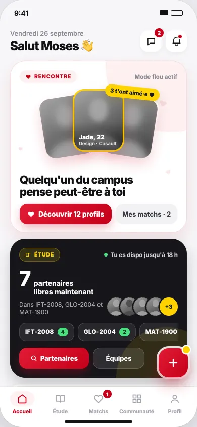
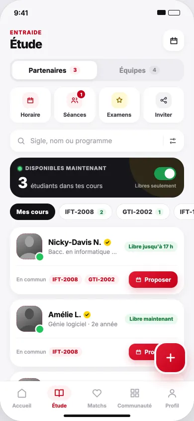
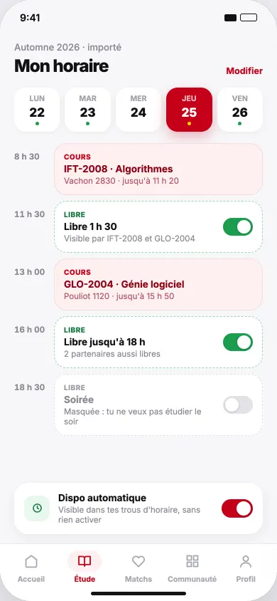
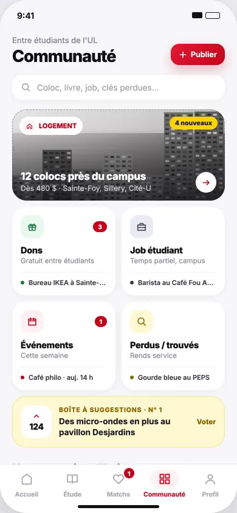
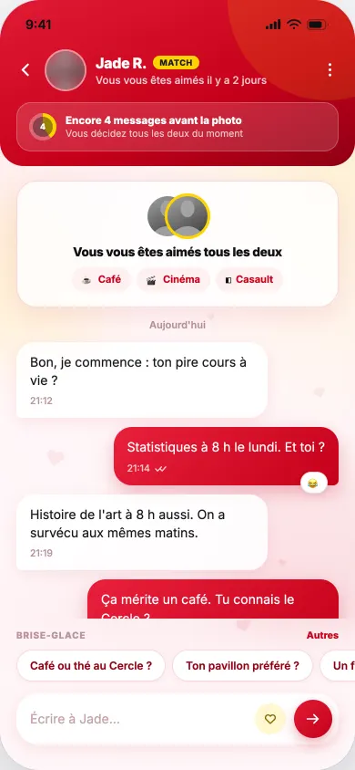
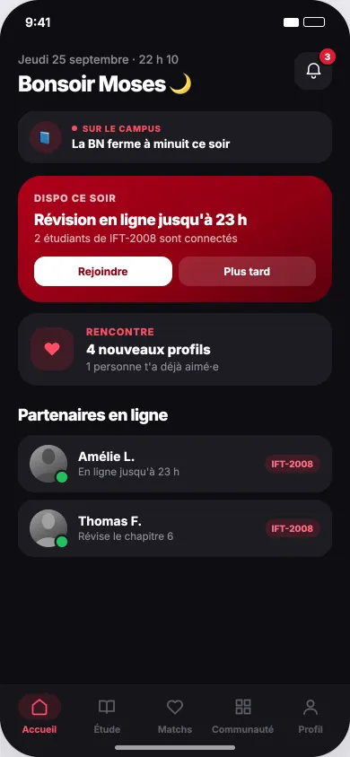
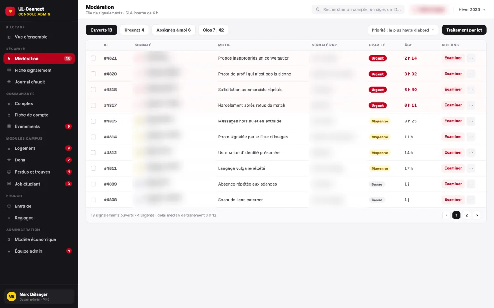

Projet principal
ULconnect
En validation sur Google Play
Plateforme pour les étudiants de l'Université Laval. L'application mobile est en validation sur Google Play. L'API et la console d'administration sont déployées sur Azure.
- Écrans mobiles
- 63
- Routes API
- 244
- Tables PostgreSQL
- 55
- Tests automatisés
- env. 450
- Application mobile
- React Native (Expo) et TypeScript, 63 écrans.
- API
- ASP.NET Core 8 : 244 routes, 48 contrôleurs, SignalR pour le temps réel, PostgreSQL (55 tables, 34 migrations).
- Infrastructure Azure
- API conteneurisée avec Docker sur Azure App Service, console React 19 / Vite sur Azure Static Web Apps, Blob Storage, Cloudflare (SSL), envoi de courriels avec Brevo (DKIM/DMARC).
- CI/CD et tests
- GitHub Actions (build, tests, déploiement). Environ 450 tests automatisés : 431 côté API, 31 côté mobile.
- Sécurité et conformité
- JWT, double authentification, limitation de débit, conformité à la Loi 25.
- Administration
- Console avec 6 rôles, abonnement géré par feature flag. Tests de charge à 2 000 inscriptions par minute, réalisés en local.







Présentation technique, code source privé.
Voir la présentation technique